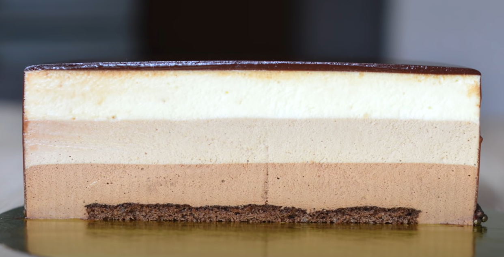

Cake Three Chocolates

Ingredients:
Recipe calculated ring on a diameter of 20 cm and a height of 7 cm. The cake weight is 1.7 kg.
The recipe for sponge cake:
- 1 egg
- 30 g sugar
- 20 g flour
- 10 g cocoa powder
Recipe mousse:
- 80 g of chocolate(each white, milk, dark)
- 80 ml of milk
- 1 egg
- 50 g sugar
- 8 g of gelatin
- 48 g of cold water
- 200 grams of cream 33-35%
Direction:
- First of all, line a baking dish with a diameter of 20 centimeters with baking papers. Break eggs into a mixer bowl, add sugar and beat at high speed until a white fluffy mass is obtained. The volume, at the same time, should increase by 3 times. While the egg and sugar mixture is whipping, prepare the cocoa flour. Sift flour and cocoa into a bowl, mix. The egg-sugar mixture is well whipped, add to it, in two steps, flour with cocoa. Gently mix, in one direction, until a homogeneous dough is obtained. We spread the dough in the prepared baking dish, leveling and bake in a preheated oven at a temperature of 375F for 15-20 minutes. We take out the finished biscuit cake from the oven, let it cool slightly, about 10 minutes, remove the form, put it on a wire rack, remove the paper and set aside.
- Let's make chocolate mousse. Grind chocolate, put in a bowl and melt in a water bath, stirring all the time. We set aside. Heavy wipping cream, with a fat content of at least 30%, beat and put in the refrigerator.Gelatin according to the manufacturer's instructions on the package. You can use sheet gelatin or powder, it does not matter. We break one egg into a bowl, add one yolk, sugar, mix, put in a water bath and, stirring all the time, heat to a temperature of 57 degrees Celsius. Pour into a mixing bowl and beat on high speed. While the egg-sugar mixture is whipping, without wasting time, melt the soaked gelatin according to the manufacturer's instructions on the package. Continuing to beat the still warm egg-sugar mixture, add the melted gelatin, continue to beat until the mass has cooled to a temperature of approximately 24 degrees Celsius. Reduce the mixer speed to low and pour in the melted chocolate in a thin stream. Or stir in the chocolate by hand, of your choice. We take out the whipped cream from the refrigerator and, in three steps, gently mixing in one direction, mix the cream into the chocolate mixture. We put the biscuit cake in a detachable form, with a diameter of 26 centimeters, put the prepared chocolate mousse on the cake, level it and send it to the freezer. Layers of milk and white chocolate are prepared in the same way in turn and frozen.
- After 10 hours, we take the cake out of the refrigerator, cut it along the edge of the mold with a very sharp knife, decorate it in accordance with our mood and imagination.